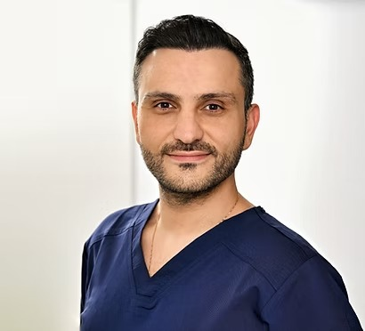

Jean Haroun
Facharzt für Innere Medizin und Gastroenterologie
Nach mehrjähriger Erfahrung als Facharzt für Innere Medizin und Gastroenterologie leitete ich bis 2023 das Departement für Gastroenterologie und Endoskopie und war zugleich Leitender Oberarzt der Klinik für Innere Medizin und Gastroenterologie am Knappschaftskrankenhaus Bottrop.
Zuletzt durfte ich die ärztliche Leitung der gastroenterologischen Schwerpunktpraxis im Medizinischen Versorgungszentrum (MVZ) Contilia in Mülheim an der Ruhr übernehmen.
Es ist mir heute eine große Freude und Ehre, Sie in meiner eigenen Praxis GastroCare begrüßen zu dürfen.